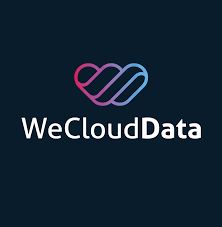
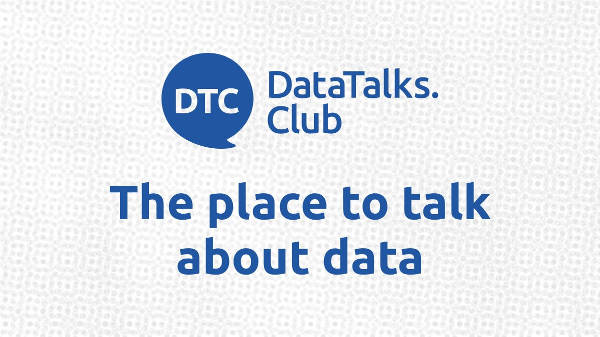

Projects
Personal Projects
Projects created by me to implement the tools and technologies I've learnt so far
Experience
Aqua Source Inc., Sarasota, USA
Data Engineer & Analyst (Pro Bono Projects)
Jan 2024 - Jun 2025
- Built ETL pipelines using Python, SQL, GCP Functions, and Sheets API, reducing manual reporting by 60-80%.
- Cleaned and structured datasets, improving data consistency and enabling real-time monitoring of delivery and inventory.
- Developed interactive Power BI dashboards for tracking KPIs, operational performance, and forecasting.
- Ensured secure data handling via GCP Secret Manager, SFTP, and pipeline documentation.
Tools & Technologies: Python, SQL, Power BI, Google Cloud Functions, Sheets API, Secret Manager, CSV
DeepMiner, Aberdeen, UK
Data Scientist / Data Engineer
Apr 2018 – Oct 2021
- Automated ingestion and transformation of structured and unstructured data by building scalable ETL pipelines using Python and SQL, reducing processing time by 40%.
- Enabled unified reporting by consolidating REST APIs, XML, and flat files into a centralized system.
- Improved analytics by optimizing data models, enhancing pipeline speed and downstream reporting accuracy.
- Delivered 10+ Power BI and Tableau dashboards, increasing operational efficiency by 25%.
- Reduced data quality issues by 50% through validation, integrity checks, and governance practices.
- Developed and deployed AI-driven NLP pipelines using SpaCy, CoreNLP, and BERT, improving text classification and entity recognition accuracy by 30%.
Tools & Technologies: Python, SQL, R, SpaCy, Stanford CoreNLP, scikit-learn, BERT, Power BI, Tableau, Pandas, REST APIs, XML, Neo4j
Professional Development & Career Transition, Houston, USA
Self-Led Data Engineering & Mentoring
Oct 2021 – Present
- Built and deployed production-grade pipelines using Python, SQL, Docker, and AWS Lambda, reducing latency by 40%.
- Published Power BI dashboards tracking KPIs from multi-source data, enhancing reporting efficiency.
- Applied data lineage, metadata documentation, and pipeline monitoring techniques to maintain transparency and traceability across project stages.
- Balanced full-time upskilling with substitute teaching and peer mentoring returners entering data careers.
Honor Roll School, Houston, USA
Early Childhood Professional
Feb 2014 – Mar 2015
Premium Lifestyles, Chennai, India
System Support Executive
Jun 2008 – Jul 2009
Education
Robert Gordon University, UK
MSc Data Science
Aug 2017 - Dec 2018
- Key Modules: Data Mining, Data Warehousing (ETL, SSIS, SSAS, SSRS & Tableau), Information Retrieval Systems, Data Preparation & Advanced Analytics using R, Professional Development & Research Skills, Big Data Analytics (Hadoop, HDFS, Hive) & Visualization using PySpark & Neo4j
- Award: Class Prize for Academic Excellence in MSc. Data Science (with Distinction)
- Description: At Robert Gordon University (RGU), a "class prize" is a high-level academic award given to the top-achieving student in a specific class. The prize is awarded to recognize outstanding academic performance, with the selection based on the highest grades in that course.
Madras University, India
Bachelors in Computer Applications
Aug 2005 - May 2008
- Key Modules: Statistics, Programming using C & C++, Object Oriented Programming (OOP) with Java, Relational Database Management using Oracle, Web Programming using HTML & JScript, Network Management
- Award: Ada Lovelace Computer Science Prize
- Description: An academic excellence award for securing the highest mark in Bachelors Degree in Computer Application
Certifications

Applied Data Engineering Certificate Program
WeCloudData | Ongoing

Professional Certificate for Data Visualisation with Python
University of Aberdeen, Scotland | 2022
View Certificate